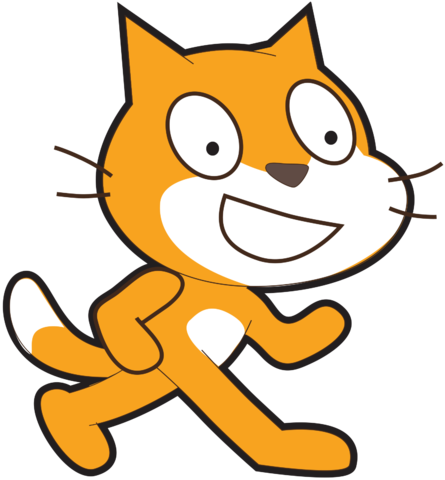
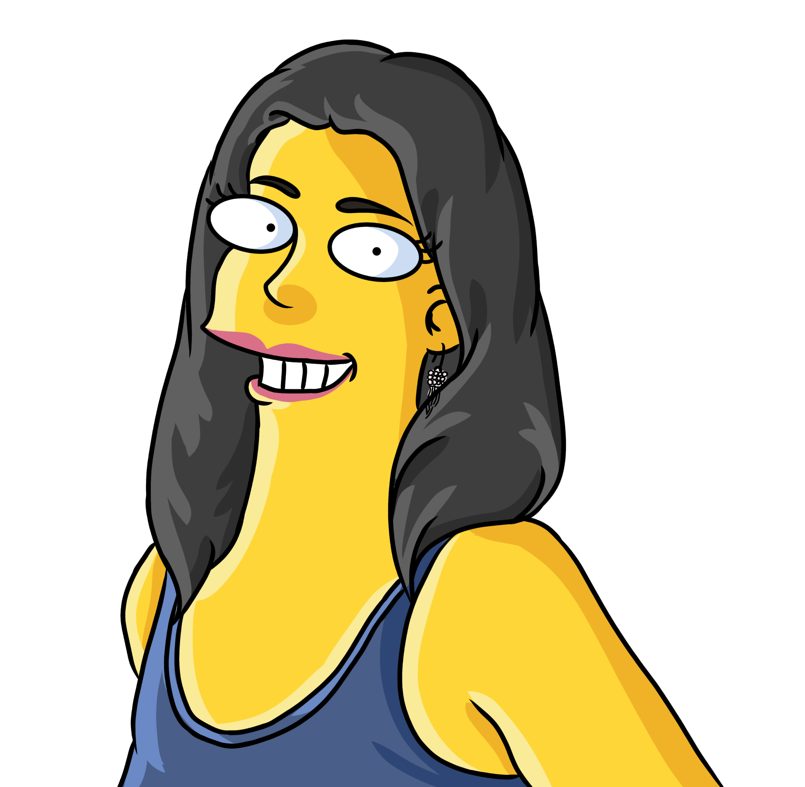

<nav class="navbar navbar-dark bg-success p-3 w-100">
    <a class="navbar-brand" href="index.html">
        
        <span class="p-2">Ein Labyrinth-Spiel mit Scratch programmieren</span>
    </a>
    <a href="qr-code.html">
        <svg aria-hidden="true" focusable="false" data-prefix="fas" data-icon="qrcode" role="img" style="height: 24px;"
            xmlns="http://www.w3.org/2000/svg" viewBox="0 0 448 512" class="svg-inline--fa fa-qrcode fa-w-14 fa-3x">
            <path fill="#fff"
                d="M0 224h192V32H0v192zM64 96h64v64H64V96zm192-64v192h192V32H256zm128 128h-64V96h64v64zM0 480h192V288H0v192zm64-128h64v64H64v-64zm352-64h32v128h-96v-32h-32v96h-64V288h96v32h64v-32zm0 160h32v32h-32v-32zm-64 0h32v32h-32v-32z"
                class=""></path>
        </svg>
    </a>

    <span class="navbar-text">
        <span class="p-2">&#169; by Susanna Kunzmann</span>
        
    </span>
</nav>